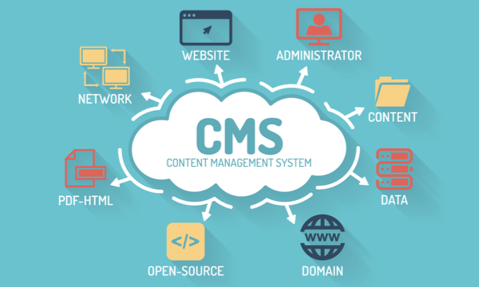

Content Management System

A Content Management System (CMS) is a software application that allows users to create, manage, and publish digital content, usually in the form of web pages or websites, without needing specialized technical knowledge. A CMS provides an easy-to-use interface that allows content creators to add, edit, and delete content on a website using a simple web browser.
PHP-based CMS platforms
These include popular CMS platforms like WordPress, Drupal, and Joomla. PHP is a widely used scripting language that is well-suited for web development, making it a popular choice for developing CMS platforms. PHP-based CMS platforms are known for their ease of use, extensibility, and robust community support.
Python-based CMS platforms
These include popular CMS platforms like Django CMS and Wagtail. Python is a powerful and versatile programming language that is known for its readability and ease of use, making it a popular choice for developing CMS platforms. Python-based CMS platforms are known for their flexibility, scalability, and advanced features.